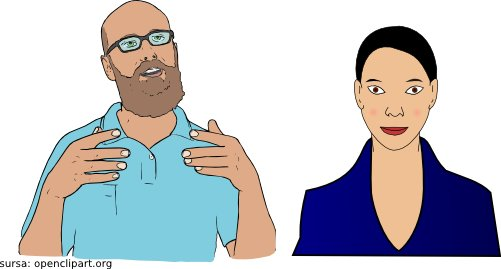
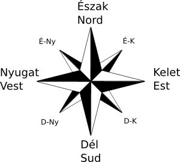
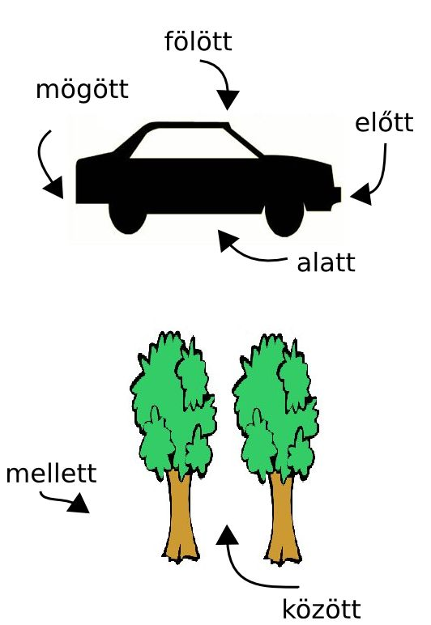

Primii pași · Lecția 008
De unde vii?
Spune de unde vii. Compară formele de origine cu cele de destinație învățate anterior.
În această pagină
În această lecție continuăm să învățăm cuvinte care exprimă relații în spațiu. După aceea învățăm câteva verbe simple și conjugarea lor la prezent. Aceste forme ale verbelor le-am întâlnit deja în lecții, dar acum le vom explica mai detaliat, ele fiind foarte utile și des folosite.
Să începem cu două dialoguri. Ele sunt destul de simple, încercați să le înțelegeți prima dată fără să vă uitați la traducerile lor. Eventual, folosiți un dicționar (dicționare online găsiți aici) sau încercați să ghiciți cuvintele necunoscute din context. Dacă vă uitați pe traducere, încercați să identificați cuvintele maghiare cu traducerile lor, observați ordinea cuvintelor și încercați să recunoașteți fenomenele gramaticale învățate până acum. Mai jos vom explica detaliat cuvintele și regulile care se găsesc în text.
| Egy nemzetközi konferencián | La o conferință internațională |
|
- Szia, én Manuel vagyok. - Szia, az én nevem Noriko. - Melyik országból vagy? - Japánból, a főváros mellől jövök. - Tokió mellett élsz? Milyen messze Tokiótól? - Tokiótól 30 kilométerre lakom, de Tokióban dolgozom. - Aha. - És te? Spanyol vagy? - Nem, én kolumbiai vagyok, Dél-Amerikából jövök, de spanyolul beszélek. - Értem. És meddig maradsz a városban? - Csak holnapig. Holnap délután utazom haza. Te is? - Nem, én még három napot maradok. A konferencia után a városban töltök két napot. - Hmm, érdekes. És mit csinálsz a városban? - Á, csak sétálok és múzeumokat látogatok... Szeretem a történelmet... - Érdekes... Akkor jó szórakozást! - Köszönöm. Viszlát! |
- Salut, eu sunt Manuel. - Servus, numele meu este Noriko. - Din ce țară ești? - Vin din Japonia, din apropierea capitalei. - Locuiești [Trăiești] lângă Tokio? Cât de departe de Tokio? - Locuiesc la 30 de km de Tokio, dar lucrez în Tokio. - Aha. - Dar tu? Ești spaniol? - Nu, eu sunt columbian, vin din America de Sud, dar vorbesc în spaniolă. - Înțeleg. Și cât timp stai în oraș? - Numai până mâine. Mâine după-amiază plec [călătoresc] acasă. Și tu la fel? - Nu, eu mai rămân trei zile. După conferință petrec două zile în oraș. - Hmm, interesant. Și ce faci în oraș? - A, doar mă plimb și vizitez muzee... Îmi place istoria... - Interesant... Distracție plăcută atunci. - Mulțumesc. La revedere! |

| Két kolléga a munkahelyen | Doi colegi la locul de muncă |
|
- Szia, hogy vagy? - Kösz, minden rendben, holnap megyek szabadságra. - Ez igen! És mennyi időre? - Csak egy hétre. - Az is jó. És hova mész? - Megyünk Olaszországba, az egész család jön. - Olaszországba? Jól hangzik. Rómába? - Nem, Nápoly mellé, egy kisvárosba. - A tengerparton van? - Nem egészen. A tengertől tíz kilométerre. De megyünk majd úszni minden nap. - Az jó, azt hiszem szép idő lesz. - Igen, reméljük. - Biztos sok pizzát esztek majd. Na, jó kirándulást. - Köszönöm szépen, neked jó munkát. |
- Salut, ce mai faci? - Mersi, totul e în regulă, mâine plec în concediu. - Asta da! Pentru cât timp? - Numai [pentru] o săptămână. - E bine și așa. Și unde te duci? - Mergem în Italia, vine toată familia. - Italia? Sună bine. La Roma? - Nu, lângă Napoli, într-un orășel. - E pe malul mării? - Nu tocmai. E la zece kilometri de mare. Dar vom merge în fiecare zi să înotăm. - Ce bine, cred că va fi vreme frumoasă. - Da, sperăm. - Sigur veți mânca multă pizza. Păi, călătorie plăcută. - Mulțumesc frumos, ție spor la muncă. |
Explicații
Primul dialog
- substantive și adjective noi:
- nemzetközi "internațional" (din nemzet "națiune" și közi, de la substantivul köz "loc intermediar", de unde vine și postpoziția között "între" sau cuvintele közép "mijloc", központ "centru") - observați că ordinea în cuvinte compuse este aproape totdeauna inversă față de limba română
- konferencia "conferință"
- főváros "capitală" (din fő "principal" și város "oraș")
- ország "țară"
- múzeum "muzeu"
- történelem "istorie"
- érdekes "interesant"
- formule de prezentare a propriei persoane:
- Én ... vagyok "Eu sunt ..."
- Az én nevem ... "Numele meu este ..." (din név "nume")
- formule de politețe:
- szia "salut"
- köszönöm "mulțumesc"
- jó szórakozást "distracție plăcută"
- viszlát "la revedere (informal)"
- sufixele învățate în lecția trecută:
- -ból/-ből — formează în principal un complement de loc din interiorul căruia se efectuează o deplasare: országból "din țară", Dél-Amerikából "din America de Sud"
- -tól/-től — formează în principal un complement de loc de la care, din preajma căruia se efectuează o deplasare, dar aici exprimă locul de la care se măsoară o distanță: Tokiótól "de (la) Tokio"
- -ra/-re — formează în principal un complement înspre suprafața căruia se efectuează o deplasare (de exemplu a házra "pe casă", adică înspre acoperișul ei), dar aici exprimă distanța la care se află ceva: X kilométerre "la X kilometri"
- -ban/-ben — formează în principal un complement de loc în interiorul căruia se află ceva sau se întâmplă ceva, deci nu un interior înspre care se efectuează o deplasare: a városban "în oraș"
- construcții referitoare la relații în spațiu:
- X-tól Y km-re "la Y km de X", de exemplu Tokiótól 30 kilométerre "la 30 km de Tokio" (ordinea cuvintelor diferită)
- Dél-Amerikából jövök "vin din America de Sud"
- Milyen messze Tokiótól? "Cât de departe de Tokio?"
- Melyik országból jössz? "Din ce țară vii?" [literal "care țară-din vii?"]
- Melyik országból vagy? "Din ce țară ești?"
- Tokió mellett "lângă Tokio", Tokió mellől "de lângă Tokio"
- haza "acasă (cu deplasare spre)"
- verbe:
- lenni "a fi": vagyok "(eu) sunt", vagy "ești" (ex. Spanyol vagy? "Ești spaniol?", Kolumbiai vagyok "Sunt columbian")
- élni "a trăi": élek "(eu) trăiesc"
- lakni "a locui": lakom "(eu) locuiesc", laksz "locuiești"
- dolgozni "a lucra": dolgozom "(eu) lucrez", dolgozol "lucrezi"
- jönni "a veni": jövök "(eu) vin", jössz "vii"
- beszélni "a vorbi": beszélek "(eu) vorbesc", beszélsz "vorbești"
- maradni "a rămâne": maradok "(eu) rămân", maradsz "rămâi"
- utazni "a călători": utazom "(eu) călătoresc", utazol "călătorești"
- tölteni "a petrece timp sau a umple ceva (de ex. un pahar)": töltök két napot "(eu) petrec două zile"
- sétálni "a se plimba": sétálok "mă plimb", sétálsz "te plimbi"
- látogatni "a vizita": látogatok "vizitez", látogatsz "vizitezi"
- szeretni "a iubi, a îndrăgi, a-i plăcea": szeretem "(eu) iubesc, îmi place" - la persoana I singular există și forma szeretek, folosită cu un anumit tip de complement direct sau fără complement direct. Forma szeretem se folosește cu alt tip de complement direct, de exemplu ca cel din dialog, articulat cu articol hotărât: szeretem a történelmet "îmi place istoria". Amănunte despre această diferență vor fi tratate în lecțiile următoare.
- pronume personale:
- én "eu", te "tu"
- noțiuni de timp
- meddig? "până când?"
- holnapig "până mâine"
- holnap délután "mâine după-amiaza"
- három nap "trei zile"
- ... után "după ...": a konferencia után "după conferință"
- cuvinte de legătură:
- de "dar, ba"
- és "și, iar"
- is "și, de asemenea"
- csak "doar, numai"
- még "încă"
- akkor "atunci"
- cazul acuzativ (în paranteză, verbul căruia i se subordonează complementul direct care este totdeauna la acuzativ):
- napot (maradok), napot (töltök), múzeumokat (látogatok), történelmet (szeretem), szórakozást (verb subînțeles "doresc")
- singular sau plural?
- Múzeumok "muzee" este la plural, pentru că nu are ca atribut o exprimare a cantității
- 30 kilométer "30 km", két nap "două zile" - substantivul rămâne la singular dacă are un atribut care exprimă cantitatea (în acest caz numeralul két "2", respectiv 30)
Al doilea dialog
- substantive noi:
- kolléga "coleg"
- munkahely "loc de muncă" (din munka "muncă" și hely "loc")
- szabadság "concediu" dar și "libertate" (din szabad "liber")
- tengerpart "malul mării" (din tenger "mare" și part "mal")
- család "familie"
- kirándulás "călătorie"
- kisváros "orășel" (din kis "mic" și város "oraș")
- formule de politețe și expresii des folosite:
- hogy vagy? "ce faci?"
- kösz "mersi (informal)"
- köszönöm szépen "mulțumesc frumos"
- jó munkát "spor la treabă" (lit. "bună muncă" la acuzativ, pentru că se subînțelege verbul kívánok neked "îți doresc")
- jól hangzik "sună bine"
- ez igen! "asta da!"
- az jó "e bine"
- azt hiszem "(așa) cred"
- sufixele învățate în lecția trecută:
- -ra/re — formează în principal un complement de loc înspre suprafața căruia se efectuează o deplasare (de exemplu a házra "pe casă", adică înspre acoperișul ei); aici este cerut de verbul menni "a merge", cu care substantivul formează un grup de cuvinte consacrat szabadságra menni "a merge în concediu"; kilométerre - ca în primul dialog
- -ba/be — formează în principal un complement de loc înspre interiorul căruia se efectuează o deplasare: egy kisvárosba "într-un orășel", Olaszországba "în Italia", Rómába "la Roma"
- expresii referitoare la relații în spațiu:
- X-től Y km-re "la Y km de X", de exemplu a tengertől tíz kilométerre "la 10 kilometri de mare"
- Hova mész? Unde mergi?
- Nápoly mellé "lângă Napoli, cu deplasare către", adică "spre un loc care este lângă Napoli"
- verbe:
- lenni "a fi": hogy vagy? lit. [cum ești?], lesz "va fi", în expresia szép idő lesz, literal: "frumoasă vreme va fi"
- menni "a merge": megyek "(eu) merg", mész "mergi", megyünk "mergem"
- jönni "a veni": jön "el/ea vine", a család jön "familia vine"
- úszni "a înota": megyünk úszni "mergem să înotăm"
- hangzik "sună", din hang "sunet"
- hinni "a crede": azt hiszem "(așa) cred"
- remélni "a spera": reméljük "sperăm"
- enni "a mânca": esztek "(voi) mâncați"
- pronume personale:
- neked "ție / pentru tine"
- noțiuni de timp:
- mennyi időre? "pe cât timp"
- egy hétre? "pentru o săptămână" lit. "pe o săptămână"
- holnap "mâine"
- minden nap "în fiecare zi"
- cuvinte de legătură și expresii:
- majd "apoi"
- biztos "sigur"
- sok "mult/multă/mulți/multe"
- na "ei, păi"
- nem egészen "nu tocmai/nu chiar", din egész "întreg"
- cazul acuzativ (și verbul din propoziție):
- azt (hiszem), pizzát (esztek), kirándulást (verb subînțeles kívánok "doresc"), munkát (verb subînțeles kívánok)
- singular sau plural?
- az egész család "întreaga familie"
- sok pizza "multă pizza" (substantivul rămâne la singular, pentru că are ca atribut un cuvânt care exprimă cantitatea)
Observații generale
- Numele geografice proprii se scriu în general cu ortografie maghiară, după pronunțarea lor: Japán, Tokió, Kolumbia, Dél-Amerika, Nápoly, Róma. Aceste nume pot primi sufixe în mod regulat, similar substantivelor "autohtone": Nápolyba, Rómából, etc.
- Multe nume de țări sunt formate cu ország "țară", de ex. Olaszország "Italia" din olasz "italian" sau Spanyolország "Spania" din spanyol "spaniol".
- Un -i alipit numelor geografice (merge cu majoritatea substantivelor, nu cu toate însă) înseamnă "din", similar cu sufixul "-an/ean" din limba română. Am întâlnit exemplul kolumbiai "columbian". Iată explicația faptului că multe nume de familie maghiare se termină în i (sau în y cu ortografie tradițională): Szilágyi, Erdélyi, Szatmári, Kassai, etc. Gândiți-vă la analogia cu limba română: Sălăjean, Moldovean, Ardelean, Oltean, etc.
- Dacă am întâlnit deja cuvântul dél "sud", să învățăm și celelalte puncte cardinale:
- În dialoguri am întâlnit cuvintele: mellett "lângă, în preajma", care nu implică deplasarea spre locul respectiv, mellé "lângă", ce implică o asemenea deplasare și mellől "de lângă", ce implică deplasarea dinspre locul respectiv. Mellett a fost deja prezentat în lecția 004 la postpozițiile referitoare la spațiu.

Să reamintim acum aceste postpoziții.

Aceste cuvinte intră și ele în sistemul triplu de exprimare a locului (similar sufixelor din lecția 007). Postpozițiile de mai sus sunt cele care nu implică deplasare spre locul respectiv. Și acestea au celelalte două forme, conform tabelului următor. Aceste forme sunt destul de regulate, dacă învățați unul dintre acești "tripleți", puteți ghici ușor și celelalte forme.
alatt, alól, alá
mögött, mögül, mögé
között, közül, közé
előtt, elől, elé
fölött, fölé, fölül (această ultimă formă este mai rar folosită)
Exemple de folosire:
A fák között vagyok. "Sunt între copaci."
A fák közül jövök. "Vin dintre copaci."
A fák közé megyek. "Mă duc între copaci." (adică mă îndrept spre un loc
între copaci)
Exerciții
1. Completați cu postpozițiile potrivite:
| 1. Az erdő ...... lakom. | Locuiesc lângă pădure. |
| 2. A diófák ...... almafákat is ültetek. | Între nuci plantez și meri. |
| 3. A nap a felhők ...... van. | Soarele este între nori. |
| 4. A tányérok ...... abroszt teszek. | Sub farfurii pun față de masă. |
| 5. A poharak ...... abrosz van. | Sub pahare este față de masă. |
| 6. A szó ....... pontosvesszőt teszek. | Înaintea cuvântului pun punct-și-virgulă. |
| 7. A kapu ...... elolvadt a hó. | În fața porții s-a topit zăpada. |
| 9. A víz ...... úsznak a halak. | Sub apă înoată peștii. |
| 10. A szekrény ...... por van. | Sub dulap este praf. |
| 11. A szekrény ...... por van. | În spatele dulapului este praf. |
| 12. A búvár a víz ...... merül. | Scafandrul se scufundă sub apă. |
| 13. Az ing ...... pulóvert veszek. | Peste cămașă iau un pulover. |
| 14. Az ing ...... pulóvert hordok. | Peste cămașă port un pulover. |
| 15. A tengeralattjáró a víz ...... van. | Submarinul este sub apă. (puteți ghici din ce părți se compune cuvântul "submarin" în maghiară?) |
| 16. A tengeralattjáró a víz ...... jön. | Submarinul vine la suprafață (lit. "peste apă"). |
Să învățăm acum ceva despre verbe. Conjugarea verbelor este o temă destul de complicată, cu multe reguli și excepții, dar pentru început putem învăța doar câteva verbe simple sau cele pe care le-am întâlnit deja în exemplele și exercițiile de până acum. Am învățat de exemplu verbul lenni "a fi" și formele lui, care este neregulat, dar foarte des folosit:
| (én) vagyok | (eu) sunt |
| (te) vagy | (tu) ești |
| (ő) (van) | (el/ea) este |
| (mi) vagyunk | (noi) suntem |
| (ti) vagytok | (voi) sunteți |
| (ők) (vannak) | (ei/ele) sunt |
La infinitiv toate verbele se termină în -ni. În cazul verbelor regulate, dacă tăiem acest -ni, rămâne forma de la persoana a III-a singular. Această formă este totodată rădăcina, forma de bază a verbului respectiv. Acestei rădăcini îi putem alipi sufixul fiecărei persoane pentru a obține forma corectă. Spre deosebire de limba română, în dicționare se găsesc rădăcinile verbelor (persoana a III-a singular) și nu infinitivul.
1. Verbe regulate
| tanulni "a învăța" | |
| (én) tanulok | (mi) tanulunk |
| (te) tanulsz | (ti) tanultok |
| (ő) tanul | (ők) tanulnak |
Am întâlnit deja de câteva ori verbul csinálni "a face", de ex. în propozițiile Mit csinálsz? "Ce faci?", Nem csinálok semmit "Nu fac nimic", Ön mit csinál? "Dvs. ce faceți?" (forma de pers. a III-a singular) etc.
| csinálni "a face" | |
| csinálok | csinálunk |
| csinálsz | csináltok |
| csinál | csinálnak |
Alte verbe regulate sunt de exemplu élni "a trăi", ülni "a ședea". Le folosim ca exemple, pentru a arăta că sufixele personale respectă și ele regulile armoniei vocalice. Observați diferența față de primele două verbe:
| élni "a trăi" | |
| élek | élünk |
| élsz | éltek |
| él | élnek |
| ülni "a ședea" | |
| ülök | ülünk |
| ülsz | ültök |
| ül | ülnek |
Sufixele personale într-un tabel:
| Én -ak/ek/ök |
Mi -unk/ünk |
| Te -sz |
Ti -tok/tek/tök |
| Ő - |
Ők -nak/nek |
Chiar și la verbele regulate există mici variații:
-
dacă rădăcina verbului (forma de persoana a III-a singular) se termină într-una din
consoanele s, sz, z, dz, ar
fi greu să pronunțăm încă un sz la persoana a II-a. De aceea, pentru
aceste verbe sufixul persoanei a II-a este -ol/el/öl. Exemplu:
olvasni "a citi" olvasok olvasunk olvasol olvastok olvas olvasnak
-
la unele verbe mai adăugăm câte o vocală de legătură pentru a face pronunțarea mai
ușoară. Exemplu:
tanítani "a învăța" (pe cineva) tanítok tanítunk tanítasz tanítotok tanít tanítanak
- la unele verbe rădăcina (persoana a III-a) este un pic deformată la infinitiv: (ex. hisz "el/ea crede" > hinni "a crede", dar nu și la indicativ prezent: hiszek, hiszel etc.
2. Verbe cu -ik
Aceste verbe au la persoana a III-a singular sufixul -ik, de unde vine și numele grupului. Aceste verbe se bucură de mare interes din partea lingviștilor pentru că păstrează o formă arhaică de conjugare, și astfel sunt o curiozitate "arheologică" a limbii. În schimb pentru cei care învață limba ele sunt supărătoare, pentru că nu există o explicație logică, simplă, care ne-ar spune care dintre verbe aparțin acestei categorii. Multe dintre aceste verbe prezintă și alte neregularități.
Exemple:
| enni "a mânca" | |
| eszem | eszünk |
| eszel | esztek |
| eszik | esznek |
| inni "a bea" | |
| iszom | iszunk |
| iszol | isztok |
| iszik | isznak |
- și aici verbele a căror rădăcină se termină în s, z, sz, dz au la persoana a II-a sufixul -ol/-el/-öl;
- și aici de multe ori infinitivul este puțin neregulat, adică rădăcina suferă o schimbare: eszik > enni, alszik > aludni, ugrik -> ugrani etc.
- La persoana I, aceste verbe au în mod tradițional sufixul -m (vezi eszem). De multe ori însă puteți auzi forma cunoscută pentru verbele regulate, aici eszek, iszok, care în general nu este considerată corectă.
3. Verbe neregulate
Unele verbe prezintă variații ale rădăcinii și de la o persoană la alta, adică sunt propriu-zis neregulate. Exemple:
| menni "a merge" | |
| megyek | megyünk |
| mész | mentek |
| megy | mennek |
| jönni "a veni" | |
| jövök | jövünk |
| jössz | jösztök |
| jön | jönnek |
Atât despre verbe la timpul prezent. Chiar și aici ar mai fi multe de spus, dar vom revizita această temă complexă în lecțiile următoare. Cu cele învățate până acum măcar ne putem da seama la ce persoană se află orice verb pe care îl auzim. Descrieri mult mai detaliate găsiți aici (în română) sau aici (în engleză). Pentru a afla conjugarea unui verb sau pentru exersarea conjugării sale, puteți merge aici. Alegeți verbul din lista din stânga sau înscrieți-i forma de indicativ prezent, persoana a III-a singular în caseta de sus, apoi faceți clic pe butonul de la Jelen idő "timpul prezent". Dacă vă exersați, înscrieți forma/formele în casetă/casete, apoi faceți clic pe JÓ? pentru a verifica câte o formă sau pe MIND JÓ? "toate bune?" pentru toate formele. Dacă vreți să vedeți pur și simplu cum se conjugă verbul, faceți clic pe RAGOZ "conjugă".
Exerciții
2. Conjugați verbele:
kivánni "a dori", állni "a sta" (pe verticală), futni "a fugi",
sietni "a se grăbi" (regulate fără -ik)
úszni "a înota", játszani "a (se) juca" (regulate cu
-ik).
Fiți atenți și la armonia vocalică. Scrieți câte două propoziții cu fiecare verb, la
persoane la alegere.
Căutați în dicționar următoarele verbe și încercați să le conjugați: "a spune", "a auzi", "a scrie", "a vorbi", "a desena", "a dormi".
3. Scrieți o scurtă compunere (în jur de 5-10 propoziții) despre o zi tipică sau una specială.
Povestiți ce faceți în această zi, la ce oră vă sculați, ce mâncați, cum mergeți la lucru sau la școală, ce faceți după aceea etc. Încercați să folosiți cuvinte și reguli gramaticale învățate în toate lecțiile de până acum (sufixe, conjugarea verbului - puteți scrie totul la timpul prezent, desigur, expresii de timp, pluralul, cazul acuzativ etc.) Fiți atenți la detalii. Probabil că veți avea nevoie de dicționar, găsiți mai multe între aceste linkuri. Nu folosiți însă programe de traducere automată ca Google Translate. Aceste servicii își au rolul lor important, dar în învățarea unei limbi sunt mai dăunătoare decât folositoare, pentru că nu produc texte corecte. O metodă pe care v-o recomandăm în schimb este următoarea: dacă nu sunteți siguri că o expresie este corectă, căutați-o pe internet, și veți vedea dacă se folosește în acea formă sau nu. Să zicem că nu mai țineți minte regulile armoniei vocalice și nu sunteți siguri dacă forma corectă este házban sau házben. Căutați-le pe internet pe amândouă, și veți vedea care dă mai multe rezultate. Totodată veți putea citi cuvântul în diferite contexte, putând să verificați încă o dată ce înseamnă.
Încercați să scrieți propoziții simple, aplicând reguli pe care le înțelegeți. Nu vă faceți multe griji pentru greșeli. și îl corectăm împreună. Astfel ne ajutați și pe noi să descoperim care sunt conceptele mai grele pentru cei care învață limba, dar și mai important, acest exercițiu vă ajută să treceți pragul psihologic între învățarea pasivă (citirea lecțiilor) și învățarea activă (producere de text). Succes!